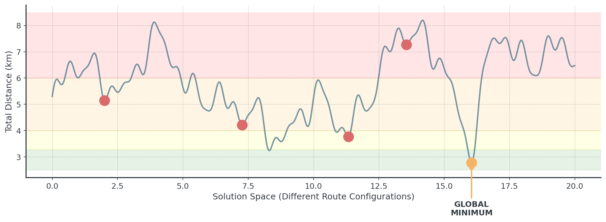
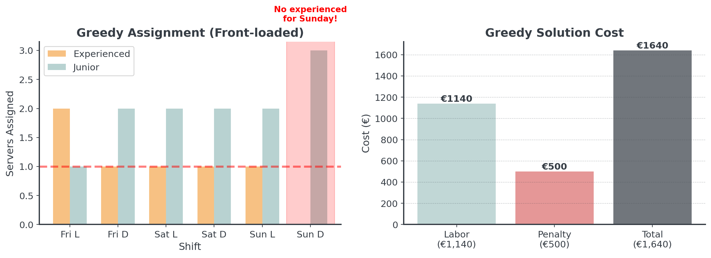
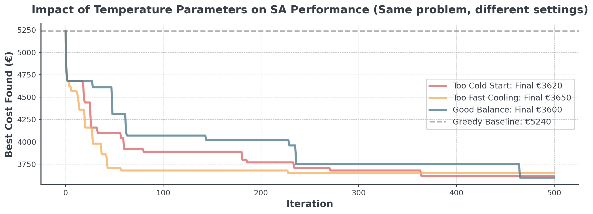
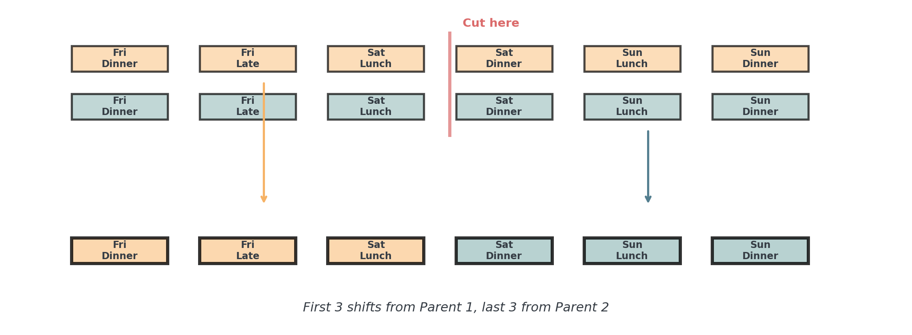
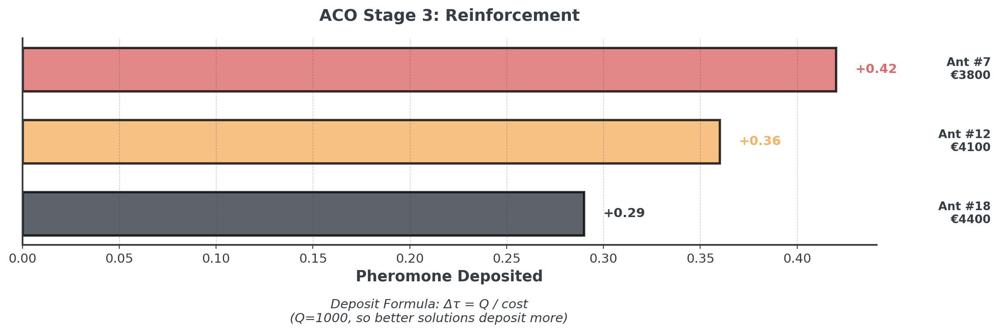
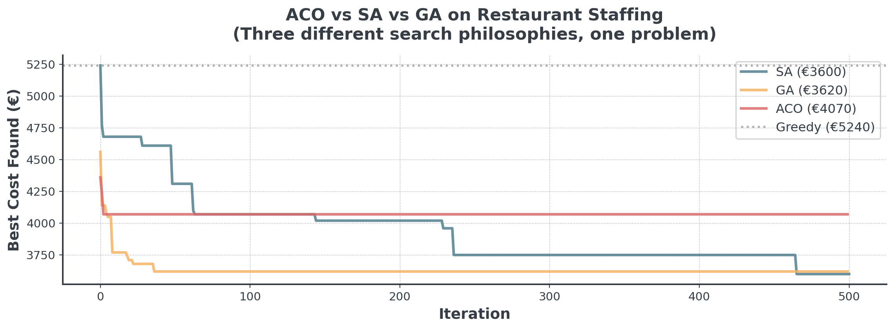

Introduction to Metaheuristics
Lecture 9 - Management Science
Dr. Tobias Vlćek
Introduction
Client Briefing: La Étoile
Restaurant Manager’s Crisis:
“I need to schedule my 18 servers across 6 shifts this weekend. Shifts have different lengths (4-6 hours), and if I don’t have enough experienced servers on busy shifts, we face penalties per missing experienced server from our parent company!”
The Staffing Challenge
A restaurant facing a weekend scheduling crisis:
La Étoile’s Problem:
- 18 servers available (6 experienced @ €75/hr, 12 junior @ €25/hr)
- 6 shifts with varying lengths (4-6 hours each)
- Each shift needs 3 servers (at least 1 experienced)
- Server preferences matter (1-10 scale, affects quality)
Question: How to balance labor costs, penalties, AND staff?
The Cost Impact: Why This Matters
The financial stakes are significant with these large penalties:
- Minimum Labor Cost: ~€3,500 (everyone works once)
- Experience Penalties: €0-€1,200 per missing experienced server
- Preference Penalties: €0-€180 per unhappy assignment
- Worst Case: Over €7,000 if poorly scheduled!
- Best Case: ??? with smart optimization
Potentially up to €3,500 difference between good and bad scheduling!
Restaurant Staffing: The Numbers
The real-world complexity we’re dealing with:
With varying shifts, preferences, and penalties, this is will be a real challenge!
Today’s Objectives
What you’ll understand after this lecture:
- Why local search fails: Recap on the local optima trap
- Escape mechanisms: How to accept worse solutions strategically
- Four powerful metaheuristics: SA, GA, Tabu Search, ACO
- Selection criteria: When to use which algorithm
Hiking in Fog
Remember the metaphor with blindfolded eyes from last lecture?
- Goal: Find the highest peak in a mountain range
- Challenge: You’re hiking in thick fog (can only see 10 meters)
- Position: Your X,Y coordinates = your decisions
- Altitude: Your current solution quality
- Problem: You might climb a small hill and think it’s the summit!
This metaphor will guide us through all metaheuristics today!
Recap: Local Optima
Real problems often have thousands of local optima!

Question: Any idea how to escape local optima?
Why Simple Methods Fail
The Silo Problem
Why neighborhood optimization fails:
Technical View: Local Optima
- Algorithm climbs nearest hill
- Gets stuck on “foothill”
- Can’t see the mountain beyond
- Every move looks worse
- Believes it found the best
Analogy: Department Silos
- Sales optimizes sales metrics
- Engineering optimizes quality
- Finance optimizes costs
- Each department “wins”
- Company performance loses!
Sum of local bests ≠ Global best
Why Greedy Gets Stuck
Greedy algorithms can simply trap themselves:

Greedy allocates resources early, creating problems later!
Local Search Also Struggles
Because we only ever accept better solutions during search:

Question: What can we do to cope with this situation?
Metaheuristic #1: Simulated Annealing
Core Concepts
The fundamental components:
- Solution = One complete schedule/route/plan
- Neighbor = A slightly modified version
- Cost = How good/bad the solution is
The Strategy
- Always accept improvements
- Sometimes accept worse solutions (the change!)
Think of it as strategic risk-taking that decreases over time!
The Metallurgy Metaphor
How annealing steel inspired an optimization algorithm:
Annealing Metal:
- Heat to high temperature
- Atoms move freely
- Slowly cool down
- Forms crystal structure
Optimization:
- Start with high “temperature”
- Accept bad moves often
- Gradually reduce temperature
- Converge to good solution
The willingness to temporarily accept worse solutions is what enables finding the summit!
Temperature Controls Acceptance
Probability of accepting worse solutions lowers with temp:

We essentially compare the cost of the new schedule to the current cost and decide whether to accept the change based on the temperature and the difference in cost.
Concept
How Simulated Annealing Works (Pseudocode)
def simulated_annealing_concept(current_schedule):
temperature = 500 # Start "hot" (adventurous)
best_schedule = current_schedule
while temperature > 1:
# Step 1: Try a random change (like swapping two shifts)
new_schedule = make_random_change(current_schedule)
# Step 2: Is it better?
if cost(new_schedule) < cost(current_schedule):
current_schedule = new_schedule # Always accept improvements
else:
# NEW: Sometimes accept worse solutions!
# Hot temperature = more likely to accept
# Cold temperature = less likely to accept
if random() < acceptance_probability(temperature):
current_schedule = new_schedule # Accept anyway!
# Step 3: Cool down (become less adventurous)
temperature = temperature * 0.95
# Remember the best we've ever seen
if cost(current_schedule) < cost(best_schedule):
best_schedule = current_schedule
return best_scheduleSA in Action: Restaurant Staffing
A simplified weekend scheduling problem we’ll use throughout:
The initial greedy schedule has the following results:
Greedy Schedule Cost: €5,240
Labor: €2250, Penalties: €1700, Unhappiness: €1290Let’s see how Simulated Annealing can improve the solution!
Visualizing SA Performance
How temperature affects the search behavior:

See how SA accepts worse solutions early, enabling escape from local optima!
Common SA Mistakes
Avoid these common implementation errors:
Mistake #1: Starting Too Cold
- If temperature is too low → Acts like greedy (no exploration)
- Fix: Start hot enough to accept bad moves
Mistake #2: Cooling Too Quickly
- If you cool fast → Get stuck early
- Fix: Cool slowly (multiply by 0.95-0.99, not 0.5)
Quick cooling is tempting for speed, but defeats the purpose of SA!
Temperature Parameter Impact

The “Good Balance” explores widely early, then refines carefully. Often you need to balance exploration and exploitation by experimenting with different parameters.
Metaheuristic #2: Genetic Algorithms
Evolution as Optimization
How natural selection inspires computational optimization:
Natural Selection:
- Population of individuals
- Fittest survive & reproduce
- Offspring inherit traits
- Mutations create diversity
- Evolution finds adaptation
Optimization:
- Population of solutions
- Best solutions selected
- Crossover combines solutions
- Mutation adds variation
- Evolution finds optimum
Just like successful products get more market share, better solutions get more “offspring” in the next generation. It’s survival of the fittest, but for schedules, routes, or designs!
The Genetic Process
Four stages repeat each generation:
- Selection: Choose parents based on fitness
- Crossover: Combine to create children
- Mutation: Randomly modify children
- Replacement: New generation replaces old
- Population Evolution: Improve population quality
Let’s see each stage in detail with our restaurant problem!
Stage 1: Selection (Tournament)
How to choose which schedules get to “reproduce”:

Each tournament selects one parent, then we pair them up sequentially for crossover.
Stage 2: Crossover (Recombination)
Combine two parent schedules to create offspring:

Crossover randomly combines good building blocks from both parents!
Stage 3: Mutation
Random changes maintain diversity and explore new solutions:

Mutation adds random exploration, like trying something completely new occasionally!
Stage 4: Replacement I
How do offspring join the population?
- Generational: Replace entire population with offspring
- Steady-State: Replace only worst individuals
- Elitism: Always keep the best solutions
Our approach: Generational with Elitism, we create 20 offspring via repeated selection/crossover/mutation, but preserve the 2 best from current generation.
Stage 4: Replacement II

Elitism ensures we never lose our best solutions while exploring new ones!
Stage 5. Population Evolution
How the population improves over generations:

Notice how population average also improves (not just the best)!
GA vs SA: Head-to-Head
Comparing exploration strategies on the restaurant problem:

GA maintains population diversity, SA explores single solution path!
GA Mistakes: Population Issues
Avoid these population-related errors:
Mistake #1: Everyone Becomes Identical
- If all solutions look the same → Lost diversity
- Fix: More mutation, bigger population, tournament selection
Mistake #2: Too Greedy in Selection
- Only keeping the very best → Premature convergence
- Fix: Keep some variety, even if not perfect (elitism of 10-20%)
GA Mistakes: Implementation
Technical pitfalls to watch out for:
Mistake #3: Breaking the Rules
- Crossover might create invalid schedules
- Fix: Always check and repair after crossover/mutation
Mistake #4: Evolution Too Slow
- Population too large or too many generations
- Fix: Start small (50-100), tune based on convergence
Metaheuristic #3: Tabu Search
Core Idea
Using memory to avoid cycling through bad solutions:
Analogy:
- Keep a list of recent dates
- “Not going back there!”
- Forces you to meet new people
- After time, memory fades
In Optimization:
- Recent solutions = “tabu”
- Don’t revisit same schedules
- Forces exploration of new areas
- Tabu list has limited size
Like keeping “lessons learned”, you remember not to use them again, but after a while, you might reconsider!
Concept
How Tabu Search Works (Pseudocode)
def tabu_search_concept():
tabu_list = [] # Our "never again" list
current_solution = initial_schedule
best_solution = current_solution
while not done:
# Look at all possible moves
possible_moves = get_all_neighbor_moves(current_solution)
# Filter out the "forbidden" moves
allowed_moves = []
for move in possible_moves:
if move not in tabu_list: # Not forbidden
allowed_moves.append(move)
# Pick the best allowed move (even if worse!)
best_move = select_best(allowed_moves)
current_solution = apply(best_move)
# Update best if improved
if cost(current_solution) < cost(best_solution):
best_solution = current_solution
# Remember this move (add to tabu list)
tabu_list.append(best_move)
if len(tabu_list) > 10: # Keep list size manageable
tabu_list.pop(0) # Forget oldest
return best_solutionTabu Search on Restaurant Problem
Real implementation with memory-based exploration:

Tabu Search’s memory prevents revisiting bad solutions!
Metaheuristic #4: Ant Colony Optimization
The Core Idea
Collective intelligence through chemical signals:
Reviews:
- Popular choices get more 5-star reviews
- More reviews → more visibility
- But old reviews fade over time
- New patterns can emerge
In Optimization:
- Good assignments get “pheromones”
- Stronger choosen more likely
- Evaporation against stagnation
- Colony finds patterns
Imagine each server-shift pairing has a “rating” that increases when it works well in a schedule. Over time, the best pairings naturally get chosen more often!
How ACO Works on Scheduling
Four key stages in each iteration:
- Construction: Each ant builds a schedule probabilistically
- Evaluation & Evaporation: Measure quality, then fade all pheromones
- Reinforcement: Good schedules deposit pheromones
- Evolution: Repeat until colony converges
Let’s see each stage visually!
ACO: Key Parameters
Two critical parameters control the balance:
Evaporation Rate (ρ)
- Higher ρ → More forgetting
- Lower ρ → Stronger memory
- Typical: 0.1 - 0.5
- Too high: Colony never learns
- Too low: Gets stuck early
Number of Ants
- More ants → More exploration
- Fewer ants → Faster iterations
- Typical: 10 - 50
- Too many: Slow, redundant
- Too few: Miss good patterns
Start with ρ=0.3 and n_ants=20, then tune based on problem size.
Stage 1: Pheromone Construction
Ants don’t pick randomly, they follow the chemical trails

To build the initial pheromone matrix, each cell is initialized with a small positive value.
Stage 2: Evaluation & Evaporation
After all ants build schedules:

Evaporation prevents premature convergence as old patterns can fade away!
Stage 3: Reinforcement
Good ants deposit more pheromones:

The best solutions leave the strongest trails for future iterations!
Stage 4: Evolution Over Iterations
Full ACO implementation on restaurant staffing:

The colony learns collectively step by step.
ACO vs Other Algorithms
How does the ant colony compare?

Any idea why ACO fares worse?
Why did ACO struggle?
The Right Tool for the Wrong Job
ACO is designed for Sequential Path-Finding (Graph Traversal).
- Best For: “I am at City A, where should I go next?” (TSP)
- Our Problem: “Who should work Friday Dinner?” (Assignment)
We forced a “Graph” algorithm onto a “Bin Packing” problem. SA and GA don’t care about geometry, so they adapted better!
Decision Framework
When to Use Which Metaheuristic?
A decision guide for algorithm selection:
| Method | Time | Quality | Complexity | Best For |
|---|---|---|---|---|
| Random | xxxx | x | Trivial | Baseline |
| Greedy | xxx | xx | Simple | Quick decisions |
| LS | xx | xxx | Medium | Improvement |
| SA | xx | xxxx | Medium | Single solution |
| GA | x | xxxx | High | Population |
| TS | xx | xxx | Medium | Avoid cycles |
| ACO | x | xxxx | High | Changing Paths |
The No Free Lunch Theorem
Why there’s no universal best algorithm:
“No Free Lunch Theorem”: No single algorithm is best for all problems. Your choice must match your problem structure:
- Path/Network Problems → ACO (pheromones for paths)
- Scheduling Problems → SA or Tabu (neighborhood swaps)
- Complex Design → GA (population diversity)
Implementation Strategy
Guidelines for successful implementation:
- Start Simple: Always try greedy first as baseline
- Profile Your Problem: Understand constraints before choosing
- Tune Incrementally: Don’t optimize all parameters at once
- Track Progress: Monitor convergence to know when to stop
- Hybrid Approaches: Combine methods (e.g., GA + Local Search)
- Use AI Assistance: Bridge the “knowledge gap” with GenAI
Today’s Briefing
Today
Hour 2: This Lecture
- Metaheuristics
- Simulated annealing
- Genetic algorithms
- Tabu search & ACO
Hour 3: Notebook
- Bean Counter delivery
- Implement SA
- Tune parameters
- Compare performance
Hour 4: Competition
- Restaurant staffing
- Multi-objective
- Schedule optimization
- Justify choice!
The Competition Challenge
La Étoile Restaurant Weekend Staffing
- Schedule 18 servers across 6 shifts (different lengths)
- Minimize labor + experience penalties + preference costs
- Ensure experienced coverage (strategic placement)
- Respect 2 servers per shift requirement
Choose your metaheuristic wisely as this is a tough problem!
Implementation Pitfalls to Avoid
Common bugs that cost you time:
- Wrong Cooling Schedule (SA)
- Too fast = stuck in local optimum
- Too slow = wastes computation time
- Poor Population Management (GA)
- Too small = no diversity
- Too large = slow evolution
- Not Tracking Best
- Current solution ≠ best ever found
Parameter Tuning Strategies
How to find good parameters without wasting time:
- Start with Rules of Thumb
- SA: Initial temp = max cost difference you’d accept
- GA: Population = 10-20× number of decision variables
- Tabu: Tenure (limit) = √(problem size)
- Grid Search on Small Instance
- Test 3-4 values per parameter
- Use 10% of full dataset
- Example:
temps = [100, 500],cooling = [0.95, 0.99]
Real-World Considerations
Technical realities when putting metaheuristics into production:
| Factor | Questions to Ask |
|---|---|
| Time Budget | How long can optimization run? |
| Solution Quality | Need optimal or “good enough”? |
| Explainability | Must justify decisions? |
| Problem Changes | Static or dynamic data? |
| Team Skills | Who maintains this code? |
Use the simplest method that meets your quality target. Complex metaheuristics are great but more costly to maintain!
Summary
Key Takeaways:
- Metaheuristics escape local optima when exact methods fail
- SA uses temperature, GA uses evolution, Tabu uses memory
- Parameter tuning is critical for performance
- No universal best - problem structure matters
- Start simple, add complexity only if needed
Break!
Take 20 minutes, then we start the practice notebook
Next up: You’ll implement metaheuristics for Bean Counter
Introduction to Metaheuristics | Dr. Tobias Vlćek | Home